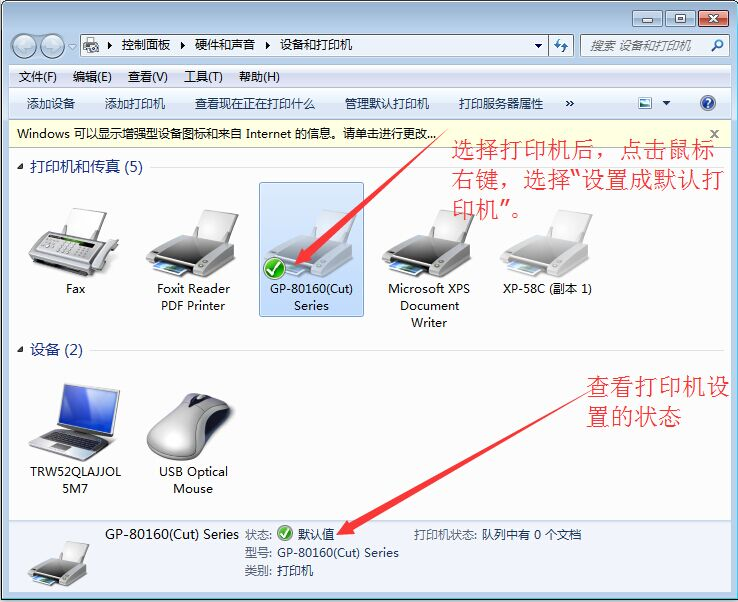
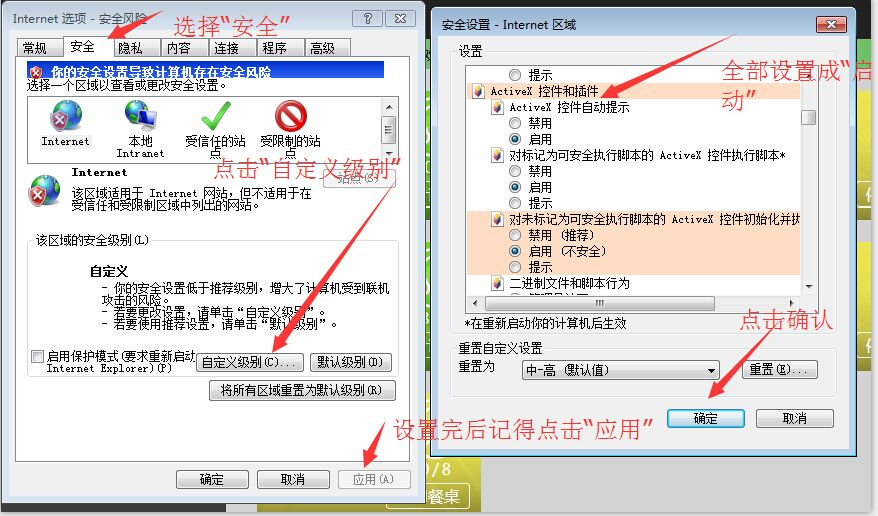

一、安装打印机驱动
根据您购买的小票打印机的型号以及您的电脑系统安装对应的驱动，安装好驱动后，设置该打印机为默认打印机。
打开计算机上的"设备和打印机"，将安装的打印机设置成为默认打印机。
如下图：

二、选择打印机规格
根据安装的打印机设备的规格选择，小票打印机有58mm与80mm,请正确设置。
如图：
三、设置浏览器
因目前只有IE内核的浏览器才能支持小票打印机设备，因此您的吧台端只能使用IE内核的浏览器处理打印相关业务，建议使用IE10浏览器，或者例如搜狗、360浏览器的兼容模式，请点击浏览器的"Internet选项"，选择"安全"，点击"自定义级别"进行设置浏览打印配置，在设置中找到"ActiveX 控件和插件"，对其下所有含有"ActiveX"的设置项全部设置成启动，然后点击"确认"，在"Internet选项"的"安全"页面中点击"应用"和"保存"。
如下图：

四、测试打印
点击"测试打印"，测试能够正确打印您的设置相关的相关信息。
如下图：